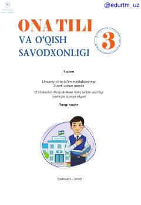

OT3-sinf o'quvchilari uchun ona tili va o'qish savodxonligi darsligi.
Mazkur darslik umumiy o'rta ta'lim maktablarining 3-sinf o'quvchilari uchun mo'ljallangan bo'lib, ona tili va o'qish savodxonligini o'rgatishga qaratilgan. Kitobda turli mavzulardagi matnlar, qoidalar va o'quvchilarning bilimini mustahkamlash uchun qiziqarli mashg'ulotlar berilgan.